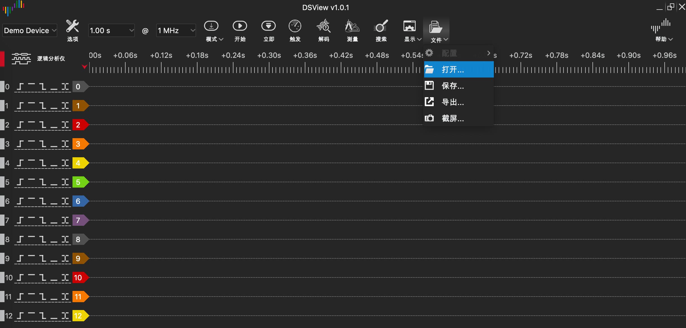
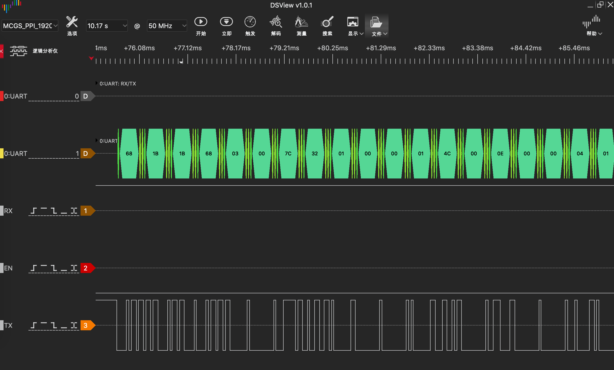

参考资料
- 西门子PPI协议手册
- PPI通信介绍
- Profibus Master 捷克语手册
- Profibus Master 机翻英文手册
- PROFIBUS Manual
- 西门子MPI通信逻辑分析仪抓包
- 昆仑通态PPI通信 逻辑分析仪抓包
Tips:
-
西门子PPI协议手册是关于MPI&PPI协议细节方面最详细的手册，如果需要深入理解MPI&PPI的通信细节，必须完整看望这本手册
-
PPI通信介绍 公司内部的PPT讲座资料，可以对MPI&PPI 有大致的了解
- Profibus Master 捷克语手册 虽然是讲Profibus，但是内容和MPI是极其相似的（MPI就是基于PROFIBUS魔改的),手册中 2.2.3 节 对MPI状态机转移条件有很清晰的描述，对编写理解MPI代码有很大的作用，原版是捷克语，如果需要看的话可以文字看英文翻译版，图片看捷克语原版（因为机翻把图片上的文字的排版弄得有点奇怪，英文版的图片排版不太好看）
- PROFIBUS Manual 这个网站里面协议细节图片解释非常丰富，对理解MPI&PPI 帮助很大
- 西门子MPI 和 昆仑通态PPI 这个两个抓包文件为dsl格式的，需要通过逻辑分析仪对应的软件打开，网址为DSVIEW,安装好后会有一个DSVIEW的软件，如下所示打开抓包文件即可，就可以看到直观的MPI&PPI通信流。 
